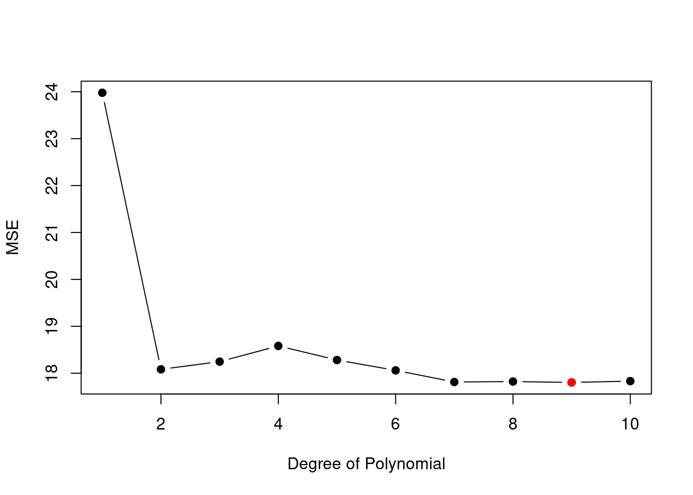
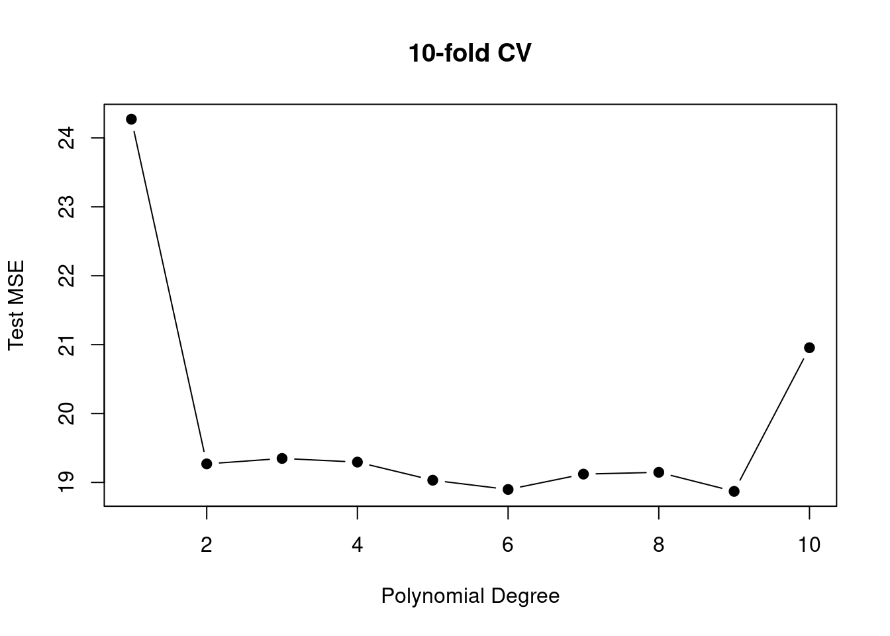

library("ISLR2")
data("Auto")
n <- nrow(Auto) # Sample size
n_Train <- 200 # Sample size of training set
n_Valid <- n - n_Train # Sample size of test/validation set
set.seed(1234)
## Index-Sets for selecting the training and validation sets
I_Train <- sample(x = 1:n, size = n_Train, replace = FALSE)
I_Valid <- c(1:n)[-I_Train]
## Trainingsdaten
Auto_Train_df <- Auto[I_Train, ]
## Validierungsdaten
Auto_Valid_df <- Auto[I_Valid, ]4 Resampling Methods
Reading: Chapter 5 of our course textbook An Introduction to Statistical Learning
Resampling methods involve repeatedly drawing samples from a training data set and refitting a model of interest on each of these samples. The different estimation results across resamples can be used, for instance, to estimate the variability of a linear regression fit.
In the following, we consider the resampling methods:
- Cross-Validation and
- Bootstrap
(Ch. 5.1) Cross-Validation
In this section, we consider a class of methods that estimate the test error rate by holding out a subset of the training observations from the fitting process, and then applying the statistical learning method to those held out observations.
(Ch. 5.1.1) Validation Set Approach
The validation set approach randomly divides the available set of observations into two parts:
- a training set and
- a validation set (or hold-out set)
The model is fit on the training set, and the fitted model is used to predict the responses for the observations in the validation set.

Illustration
Reconsider the Auto data set. In Chapter 3, we found that a model that predicts mpg using horsepower and horsepower\(^2\) predicts better than a model that uses only the linear term. But maybe a cubic or a higher order polynomial regression model predicts even better? The validation set approach can be used to select the degree \(p\) of the polynomial regression model \[
\texttt{mpg}=\beta_0 + \sum_{j=1}^p\beta_j \texttt{horsepower}^j + \epsilon.
\]
Step 1: Randomly split the total data set into mutually exclusive training and test (validation) sets of roughly equal subsample sizes:
- Training set: \(\{(x_i,y_i), i\in\mathcal{I}_{Train}\},\) where \(n_{Train}=|\mathcal{I}_{Train}|<n\)
- Test set: \(\{(x_i,y_i), i\in\mathcal{I}_{Test}\},\) where \(n_{Test}=|\mathcal{I}_{Test}|<n\)
such that \(n_{Train}\approx n_{Test}\) with \(n=n_{Train} + n_{Test}\) and \[ \mathcal{I}_{Train}\cap \mathcal{I}_{Test}=\emptyset. \] Code for splitting data randomly into training and validation sets:
Step 2: Estimation of the polynomial regression model, e.g., for \(p=2\) using the training set:
p <- 2
Train_polreg <- lm(mpg ~ poly(horsepower, degree = p, raw=TRUE),
data = Auto_Train_df)Step 3: Validation of the polynomial regression model by computing the test mean squared (prediction) error using the validation set: \[ \operatorname{MSE}_{Test}^{ValidationSetApproach}=\frac{1}{n_{Test}}\sum_{i\in\mathcal{I}_{Test}}(y_i - \hat{y}_i)^2, \] where \(\hat{f}\) in \(\hat{y}_i=\hat{f}(x_i)\) is computed from the training data, but evaluated at the test data \(x_i,\) \(i\in\mathcal{I}_{Test}.\)
y_fit_Valid <- predict(Train_polreg, newdata = Auto_Valid_df)
RSS_Valid <- sum((Auto_Valid_df$mpg - y_fit_Valid)^2)
MSE <- RSS_Valid / n_ValidRepeating Steps 1-3 for a series of polynomial degrees \(p=1,\dots,10\) allows us to search for the polynomial degree with lowest test MSE.
p_max <- 10
MSE <- numeric(p_max)
for(p in 1:p_max){
## Step 1
Train_polreg <- lm(mpg ~ poly(horsepower, degree = p, raw=TRUE),
data = Auto_Train_df)
## Step 2
y_fit_Valid <- predict(Train_polreg, newdata = Auto_Valid_df)
## Step 3
RSS_Valid <- sum( (Auto_Valid_df$mpg - y_fit_Valid)^2 )
MSE[p] <- RSS_Valid / n_Valid
}
plot(x = 1:p_max, y = MSE, type = "b",
col = "black", bg = "black", pch = 21,
xlab = "Degree of Polynomial", ylab = "MSE")
points(y = MSE[which.min(MSE)],
x = c(1:p_max)[which.min(MSE)],
col = "red", bg = "red", pch = 21) 
Figure 4.1 shows the test MSE values based on one random split of the dataset. The result that \(p=9\) minimizes the test MSE, however, may depend on the random split. Different random splits may lead to different model selection (choices of \(p\)).
The following code repeats the above computations for multiple random splits of the dataset into training and validation sets:
## R = 10 random splits
R <- 10
## Container for the MSE results
MSE <- matrix(NA, R, p_max)
for(r in 1:R){
## Index sets for training and validation sets
I_Train <- sample(x = 1:n, size = n_Train, replace = FALSE)
I_Valid <- c(1:n)[-I_Train]
## Training set
Auto_Train_df <- Auto[I_Train, ]
## Validation set
Auto_Valid_df <- Auto[I_Valid, ]
for(p in 1:p_max){
## Step 1
Train_polreg <- lm(mpg ~ poly(horsepower, degree = p, raw = TRUE),
data = Auto_Train_df)
## Step 2
y_fit_Valid <- predict(Train_polreg, newdata = Auto_Valid_df)
## Step 3
RSS_Valid <- sum( (Auto_Valid_df$mpg - y_fit_Valid)^2 )
MSE[r,p] <- RSS_Valid / n_Valid
}
}
matplot(y = t(MSE), type="b", ylab="MSE", xlab="Degree of Polynomial",
pch=21, col="black", bg="black", lty = 1, main="")
for(r in 1:R){
points(y = MSE[r,][which.min(MSE[r,])],
x = c(1:p_max)[which.min(MSE[r,])],
col = "red", bg = "red", pch = 21)
}
Figure 4.2 shows that the validation set approach can be highly variable. The selected polynomial degrees (minimal test MSE) strongly varies across the different random splits and thus depend on the data included in the test and validation sets.
A further serious problem with the validation set approach is that the evaluated predictions \(\hat{y}_i=\hat{f}(x_i)\) are based on estimates \(\hat{f}\) computed from the training set, where, however, the training set sample size \(n_{Train}\) is typically substantially smaller than the actual sample size \(n.\) This leads to increased (i.e. biased) test MSE values which do not reflect the actual test MSE values for the total sample size \(n.\)
Leave-One-Out and \(k\)-fold Cross-validation are refinements of the validation set approach that addresses these issues.
(Ch. 5.1.2) Leave-One-Out Cross-Validation (LOOCV)
Like the validation set approach, LOOCV involves splitting the set of validation observations into two parts.
However, instead of creating two subsets of comparable size, a single observation is used for the validation set, and the remaining observations are used for the training set. , i.e.
- Training set: \(\{(x_1,y_1),\dots,(x_{i-1},y_{i-1}),(x_{i+1},y_{i+1}),\dots,(x_{n},y_{n})\}\) with \(n_{Train}=n-1\)
- Test set: \(\{(x_i,y_i)\}\) with \(n_{Test}=1\)
The \(i\)th estimate for the test MSE is thus \[ \operatorname{MSE}_i = \left(y_i - \hat{y}_i\right)^2, \] which is an (approximately) unbiased estimate for the test MSE, although a poor estimate with a high variance as it is based on only one observation in the test set.
Repeating this leave-one-out splitting approach for each \(i=1,\dots,n,\) produces \(n\) many estimates of the test MSE: \[ \operatorname{MSE}_1, \operatorname{MSE}_2,\dots,\operatorname{MSE}_n \]
The LOOCV estimate is then formed by the average of the \(n\) MSE estimates: \[ \operatorname{LOOCV}=\operatorname{CV}_{(n)} = \frac{1}{n} \sum_{i=1}^n\operatorname{MSE}_i. \tag{4.1}\]
Figure 5.3 shows schematically the leave-one-out data splitting approach.

Advantages of CV over the Validation Set approach:
- Lower bias. Since the test MSE estimates are based on training sets with sample sizes \(n_{Train}=n-1 \approx n,\), LOOCV does not overestimate the test error rate as much the validation set approach does.
- Performing LOOCV multiple times, always yields the same result. I.e., there is no randomness due to the training/validation set splits as seen for the validation set approach.
Codes to implement the LOOCV approach for the Auto data example:
MSE_i <- matrix(NA, n, p_max)
## Save starting time of the loop
start_time <- Sys.time()
for(r in 1:n){
## Training set
Auto_Train_df <- Auto[-r, ]
## Validation set
Auto_Valid_df <- Auto[r, ]
for(p in 1:p_max){
## Step 1
Train_polreg <- lm(mpg ~ poly(horsepower, degree = p, raw = TRUE),
data = Auto_Train_df)
## Step 2
y_fit_Valid <- predict(Train_polreg, newdata = Auto_Valid_df)
## Step 3
MSE_i[r,p] <- (Auto_Valid_df$mpg - y_fit_Valid)^2
}
}
## Save end time of the loop
end_time <- Sys.time()
LOOCV <- colMeans(MSE_i)
plot(x = 1:p_max, y = LOOCV, type = "b",
col = "black", bg = "black", pch = 21,
xlab = "Degree of Polynomial", ylab = "LOOCV")
points(y = LOOCV[which.min(LOOCV)],
x = c(1:p_max)[which.min(LOOCV)],
col = "red", bg = "red", pch = 21) 
end_time\(-\)start_time \(=\) 3.83 seconds
for the computations which is quite long.
Luckily, for least squares fits of linear/polynomial regression models one can use the following short-cut formula \[ \operatorname{LOOCV}=\operatorname{CV}_{(n)} = \frac{1}{n} \sum_{i=1}^n\left(\frac{y_i - \hat{y}_i}{1-h_i}\right)^2, \tag{4.2}\] where
- \(\hat{y}_i\) is the \(i\)th fitted value from the original least squares fit, based on the total sample size \(n,\) and
- \(h_i\) is the leverage statistic for the \(i\)th observation, i.e. \[ h_i=\left[X(X'X)^{-1}X'\right]_{ii}. \]
The following codes implement this fast LOOCV version:
LOOCV_fast <- numeric(p_max)
## Save starting time
start_time2 <- Sys.time()
for(p in 1:p_max){
PolyReg <- lm(mpg ~ poly(horsepower, degree = p, raw = TRUE),
data = Auto)
h <- lm.influence(PolyReg)$hat
LOOCV_fast[p] <- mean(((Auto$mpg - fitted.values(PolyReg))/(1 - h))^2)
}
## Save end time of the loop
end_time2 <- Sys.time()Indeed, both approaches yield the same LOOCV values
## Minimal absolute difference between
## the naive and the fast implementation:
round(max(abs(LOOCV - LOOCV_fast)), 3)[1] 0end_time2\(-\)start_time2 \(=\) 0.019 seconds
for the computations.
LOOCV is a very general method, and can be used with any kind of predictive modeling; e.g.
- Logistic regression
- Linear discriminant analysis
- Quadratic discriminant analysis
- etc.
and any statistical prediction method discussed in the lecture or in our textbook ISLR2.
Caution: The fast LOOCV Equation 4.2 does not hold in general, but only for least squares fits of linear regression models, which includes, for instance, polynomial regressions, but, for instance, not logistic regression models.
(Ch. 5.1.3) \(k\)-Fold Cross-Validation
An alternative to LOOCV is \(k\)-fold CV.
This approach divides the total index set \(\mathcal{I}=\{1,2,\dots,n\}\) of the original data data set into \(k\) mutually exclusive subsets (folds) of roughly equal sizes \[ \mathcal{I}_1,\,\mathcal{I}_2,\dots,\mathcal{I}_k \] with \(|\mathcal{I}_1|\approx |\mathcal{I}_k|\approx n/k.\)
These \(k\) index sets allow us construct different training and test sets for each \(j=1,2,\dots,k\)
- Training set: \(\{(x_i,y_i),\; i\in\mathcal{I}\setminus \mathcal{I}_j\}\) with sample size of \(n_{Train}\approx n - n/k\)
- Test set: \(\{(x_i,y_i),\;i\in\mathcal{I}_j\}\) with sample size of \(n_{Test}\approx n/k\)
Each pair of training and test set allow to compute a estimate of the test error \[ \operatorname{MSE}_1, \operatorname{MSE}_2,\dots,\operatorname{MSE}_k. \] The \(k\)-fold CV estimate is computed by averaging these values \[ \operatorname{CV}_{(k)}=\frac{1}{k}\sum_{j=1}^k\operatorname{MSE}_j \tag{4.3}\]
Figure 5.5 illustrates the data splitting for \(k\)-fold CV.

LOOCV is a special case of \(k\)-fold CV with \(k=n\).
Most often used \(k\)-values in practice are \(k=5\) or \(k=10\).
Why \(k=5\) or \(k=10\) instead of \(k=n\)?
- Faster computation times (\(k=5\) instead of \(k=n\) model fits)
- Improved estimates of the test MSE (see next section)
The following codes illustrate \(k\)-fold CV:
set.seed(123)
## number of folds for k-fold CV
k <- 5
## container for storing the MSE results
MSE_folds <- matrix(NA, k, p_max)
## selector for the folds
folds <- sample(rep(1:k, length = n))
## Save starting time of the loop
start_time <- Sys.time()
for(j in 1:k){
## Training set
Auto_Train_df <- Auto[folds != j, ]
## Validation set
Auto_Valid_df <- Auto[folds == j, ]
for(p in 1:p_max){
## Step 1
Train_polreg <- lm(mpg ~ poly(horsepower, degree = p, raw = TRUE),
data = Auto_Train_df)
## Step 2
y_fit_Valid <- predict(Train_polreg, newdata = Auto_Valid_df)
## Step 3
MSE_folds[j,p] <- mean((Auto_Valid_df$mpg - y_fit_Valid)^2)
}
}
## Save end time of the loop
end_time <- Sys.time()
CV_kfold <- colMeans(MSE_folds)
plot(x = 1:p_max, y = CV_kfold, type = "b",
col = "black", bg = "black", pch = 21, main="k-fold CV",
xlab = "Degree of Polynomial", ylab = expression("CV"[k]))
points(y = CV_kfold[which.min(CV_kfold)],
x = c(1:p_max)[which.min(CV_kfold)],
col = "red", bg = "red", pch = 21) 
(Ch. 5.1.4) Bias-Variance Trade-Off for \(k\)-Fold Cross-Validation
There is a bias-variance trade-off associated with the choice of \(k\) in \(k\)-fold CV.
Bias:
- Small \(k\) lead to test MSE estimates with large bias
- Large \(k\) lead to test MSE estimates with small bias
Explanation:
A small \(k\) leads to trainings sets with samples sizes \(n_{Train} \ll n\) substantially smaller than the actual sample size \(n.\) Thus, we estimate the MSE for a sample size that is substantially smaller than the sample size \(n\) we are actually interested in. This leads to systematic overestimations of the actual test MSE for sample size \(n.\)
A large \(k\) reduces this bias since \(n_{Train}\approx n.\) Thus we estimate essentially the actual test MSE for sample size \(n.\)
Variance:
- Small \(k\) lead to test MSE estimates with small variance
- Large \(k\) lead to test MSE estimates with large variance
Explanation:
- In \(k\)-fold CV, the training sets overlap pairwise by roughly \(((k-2)/k)\times 100 \%\).
- For \(k=2\) there is no overlap.
- For \(k=5\) (\(k\)-fold CV) approximately \((k-2)/k=(3/5)=60\%\) of the training data points are equal in each pair of training sets.
- For \(k=n\) (LOOCV) approximately \((n-2)/n=98\%\) of the training data points are equal in each pair of trainings sets.
Thus, the larger \(k\) the more similar the training data sets become. However, very similar training sets lead to highly correlated test MSE estimates. Since the mean of highly correlated quantities has higher variance than does the mean of quantities that are not as highly correlated, the test error estimate resulting from LOOCV tends to have higher variance than does the test error estimate resulting from \(k\)-fold CV with \(k<n.\)
\(k\)-fold CV with \(k=5\) or \(k=10\) is often considered a good compromise balancing these bias and variance issues.
(Ch. 5.1.5) Cross-Validation on Classification Problems
Cross-validation can also be a very useful approach in the classification setting when \(Y\) is qualitative.
In the classification setting, the LOOCV error rate takes the form \[ \operatorname{CV}_{(n)}=\frac{1}{n}\sum_{i=1}^n\operatorname{Err}_i, \] where \[ \operatorname{Err}_i=I(y_i\neq \hat{y}_i) \] with \(I(\texttt{TRUE})=1\) and \(I(\texttt{FALSE})=0.\)
Analogously for the \(k\)-fold CV error rate and the validation set error rate.
We can, for instance, determine the degree \(d\) in logistic regression models \[ \log\left(\frac{p(X)}{1-p(X)}\right)=\beta_0 +\sum_{j=1}^d X_j^d \] by selecting that polynomial degree \(d\) that minimizes the CV error rate.
Likewise, one can select the tuning parameter \(K\) in KNN classification by minimizing the CV error rate across different candidate values for \(K.\)
(Ch. 5.2) The Bootstrap
The bootstrap is a widely applicable and powerful statistical tool to quantify the uncertainty associated with a given estimator or statistical learning method.
Illustration
Suppose that we wish to invest a fixed sum of money in two financial assets that yield returns of \(X\) and \(Y.\) These returns \(X\) and \(Y\) are random with
- \(Var(X)=\sigma^2_X\)
- \(Var(Y)=\sigma^2_Y\)
- \(Cov(X,Y)=\sigma_{XY}\)
We want to invest a fraction \(\alpha\in(0,1)\) in \(X\) and invest the remaining \(1-\alpha\) in \(Y.\)
Our aim is to minimize the variance (risk) of our investment, i.e., we want to minimize \[ Var\left(\alpha X + (1-\alpha)Y\right). \] One can show that the value \(\alpha\) that minimizes this variance is \[ \alpha = \frac{\sigma^2_Y - \sigma_{XY}}{\sigma^2_X + \sigma^2_Y - 2\sigma_{XY}}. \tag{4.4}\] Using a data set that contains past measurements \[ ((X_1,Y_1),\dots,(X_n,Y_n)) \] for \(X\) and \(Y,\) we can estimate the unknown \(\alpha\) by plugging in estimates of the variances and covariances \[ \hat\alpha = \frac{\hat\sigma^2_Y - \hat\sigma_{XY}}{\hat\sigma^2_X + \hat\sigma^2_Y - 2\hat\sigma_{XY}} \tag{4.5}\] with \[ \begin{align*} \hat{\sigma}^2_X&=\frac{1}{n}\sum_{i=1}^n\left(X_i-\bar{X}\right)^2\\ \hat{\sigma}^2_Y&=\frac{1}{n}\sum_{i=1}^n\left(Y_i-\bar{Y}\right)^2\\ \hat{\sigma}_{XY}&=\frac{1}{n}\sum_{i=1}^n\left(X_i-\bar{X}\right)\left(Y_i-\bar{Y}\right), \end{align*} \] where \(\bar{X}=\frac{1}{n}\sum_{i=1}^nX_i,\) and likewise for \(\bar{Y}.\)
It is natural to wish to quantify the accuracy of our estimate \(\hat\alpha\approx \alpha.\) I.e., we wish to know the standard error of the estimator \(\hat\alpha\), \[ \sqrt{Var(\hat\alpha)} = \operatorname{SE}(\hat\alpha)=? \] Computing \(\operatorname{SE}(\hat\alpha)\) is here difficult due to the definition of \(\hat\alpha\) in Equation 4.5 which contains variance estimates also in the denominator.
The Infeasible Bootstrap: A Monte Carlo Simulation
Let us, for a moment, assume that we know the distributions of \(X\) and \(Y.\) For simplicity, let’s say \[ \left(\begin{matrix}X\\ Y\end{matrix}\right) \sim F_{(X,Y)}, \] where \(F_{(X,Y)}\) is the distribution function of the bi-variate normal distribution \[ \mathcal{N}\left(\left(\begin{matrix}0\\0\end{matrix}\right),\left[\begin{matrix}\sigma_X^2&\sigma_{XY}\\\sigma_{XY}&\sigma_{Y}^2\end{matrix}\right]\right). \tag{4.6}\] If this were true, i.e., if we would know the true population distribution of \(X\) and \(Y,\) we could simply generate a new dataset containing new observations for \(X\) and \(Y\) that allows us to compute a new estimate \(\hat\alpha.\)
Repeatedly generating new datasets \(((X_1,Y_1),\dots,(X_n,Y_n))\) by sampling new observations from the (here assumed) true population distribution Equation 4.6, for instance, \(B=1000\) many times, would allow us to compute \(B=1000\) estimates
\[
\hat\alpha_1,\;\hat\alpha_2,\dots,\hat\alpha_{B}.
\] The empirical standard deviation \[
\sqrt{\frac{1}{B}\sum_{b=1}^B\left(\hat\alpha_b - \bar{\alpha}\right)^2},\quad\text{with}\quad \bar{\alpha} = \frac{1}{B}\sum_{b=1}^B\hat\alpha_b,
\] is then a very good estimate of the (unknown) true \(\operatorname{SE}(\hat\alpha).\)
Indeed, by the law of large numbers this sample standard deviation consistently estimates the true \(\operatorname{SE}(\hat\alpha)\) as \(B\to\infty,\) provided that we sample from the true population distribution \(F_{(X,Y)}.\)
R code for doing this Monte Carlo simulation:
suppressPackageStartupMessages(library("MASS")) # for mvrnorm()
n <- 100 # sample size
## Next: Defining the (usually unknown) population
## distribution of (X,Y) ~ F_XY, where F_XY is
## assumed to be a Bi-variate normal distribution
## with the following parameters:
mu_X <- 0
mu_Y <- 0
sigma2_X <- 3
sigma2_Y <- 4
sigma_XY <- 1
Sigma <- rbind(c(sigma2_X, sigma_XY),
c(sigma_XY, sigma2_Y))
## The true (usually unknown) alpha value:
alpha_true <- (sigma2_Y - sigma_XY) / (sigma2_X + sigma2_X - 2 * sigma_XY)
## Infeasible Bootstrap (i.e. a Monte Carlo (MC) Simulation)
set.seed(333)
B <- 1000
alpha_hat_MC <- numeric(B)
for(b in 1:B){
dat <- mvrnorm(n = n, mu = c(mu_X, mu_Y), Sigma = Sigma)
X <- dat[,1]
Y <- dat[,2]
##
sigma2_X_hat <- var(X)
sigma2_Y_hat <- var(Y)
sigma_XY_hat <- cov(X,Y)
##
alpha_hat_MC[b] <- (sigma2_Y_hat - sigma_XY_hat) / (sigma2_X_hat + sigma2_X_hat - 2 * sigma_XY_hat)
}
## Estimate of the standard error of the estimates for alpha:
sd(alpha_hat_MC)[1] 0.2301389sd(alpha_hat_MC) \(=\) 0.2301389,
and by the law of large number (large B), we can expect this estimation to be really good and reliable.
But, unfortunately, this result depends on our **completely unrealistic assumption that we know the true population distribution \(F_{(X,Y)}\) of \((X,Y),\) which makes this simple resampling approach infeasible in practice. 😭
The Actual (Feasible) Bootstrap
Fortunately, we can use the empirical cumulative distribution function \(F_{n,(X,Y)}\) from the originally observed dataset of past measurements for \(X\) and \(Y,\) as an approximation to the true (unknown) population distribution \(F_{(X,Y)}\), \[ F_{n,(X,Y)}\approx F_{(X,Y)}. \]
So, instead of resampling from an unknown population distribution \(F_{(X,Y)},\) which is not possible in practice, we resample from the empirical distribution \(F_{n,(X,Y)},\) which is easily possible in practice. 🥳
This idea will work well, as long as \(F_{n,(X,Y)}\) serves as a good approximation of \(F_{(X,Y)}\) which will always be the case if the sample size \(n\) is sufficiently large since, by the famous Glivenko-Cantelli Theorem, \(F_{n,(X,Y)}\) is uniformly consistent for \(F_{(X,Y)}.\)
Sampling from an empirical cdf \(F_{n}\) simply means sampling from the observed dataset \((X_i,Y_i)\), \(i=1,\dots,n\), with replacement, for instance like this:
bootstrap_sample <- sample(x = 1:n, n, replace = TRUE)
bootstrap_data <- data_frame[bootstrap_sample, ]In order to illustrate the bootstrap, let us generate some artificial data. We use again the bi-variate normal distribution as in the “infeasible bootstrap” illustration.
## Generate some artificial data
observed_data <- mvrnorm(n = n, mu = c(mu_X, mu_Y), Sigma = Sigma)If the bootstrap works, then the bootstrap estimate of the standard error \(\operatorname{SE}(\hat\alpha)\) should be close to the infeasible Monte Carlo estimate, even though the bootstrap method does not explicitly use the true data generating process, but only the observed data.
The following code implements the bootstrap:
set.seed(123)
## Bootstrap
B <- 1000
alpha_hat_boot <- numeric(B)
for(b in 1:B){
bootstrap_sample <- sample(x = 1:n, n, replace = TRUE)
bootstrap_data <- observed_data[bootstrap_sample, ]
##
X <- bootstrap_data[,1]
Y <- bootstrap_data[,2]
##
sigma2_X_hat <- var(X)
sigma2_Y_hat <- var(Y)
sigma_XY_hat <- cov(X,Y)
##
alpha_hat_boot[b] <- (sigma2_Y_hat - sigma_XY_hat) / (sigma2_X_hat + sigma2_X_hat - 2 * sigma_XY_hat)
}
## Estimate of the standard error of the estimates for alpha:
sd(alpha_hat_boot)[1] 0.2523776sd(alpha_hat_boot) \(=\) 0.2523776.
This is really close to the infeasible Monte Carlo simulation based estimate sd(alpha_hat_MC) \(=\) 0.2301389, but without making use of the unknown data generating process.
The bootstrap method is attributed to Bradley Efron, who received the International Prize in Statistics (the Nobel price of statistics) for his seminal works on the bootstrap method.
4.1 R-Lab: Resampling Methods
In this lab, we explore the resampling techniques covered in this chapter. Some of the commands in this lab may take a while to run on your computer.
4.1.1 The Validation Set Approach
We explore the use of the validation set approach in order to estimate the test error rates that result from fitting various linear models on the Auto data set.
Before we begin, we use the set.seed() function in order to set a for R’s random number generator, so that the (pseudo) random data splits are reproducible.
We begin by using the sample() function to split the set of observations into two halves, by selecting a random subset of \(196\) observations out of the original \(392\) observations. We refer to these observations as the training set.
library("ISLR2")
attach(Auto)
## One half of the sample size
nrow(Auto)/2[1] 196set.seed(1)
train <- sample(x = 1:392, size = 196)We then use the subset option in lm() to fit a linear regression using only the observations corresponding to the training set.
lm.fit <- lm(mpg ~ horsepower,
data = Auto,
subset = train)We now use the predict() function to estimate the response for all \(392\) observations, and we use the mean() function to calculate the MSE of the \(196\) observations in the validation set. Note that the -train index below selects only the observations that are not in the training set.
mean((mpg - predict(lm.fit, Auto))[-train]^2)[1] 23.26601Therefore, the estimated test MSE for the linear regression fit is \(23.27\). We can use the poly() function to estimate the test error for the quadratic and cubic regressions.
lm.fit2 <- lm(mpg ~ poly(horsepower, 2),
data = Auto,
subset = train)
## Test MSE
mean((mpg - predict(lm.fit2, Auto))[-train]^2)[1] 18.71646lm.fit3 <- lm(mpg ~ poly(horsepower, 3),
data = Auto,
subset = train)
## Test MSE
mean((mpg - predict(lm.fit3, Auto))[-train]^2)[1] 18.79401These error rates are \(18.72\) and \(18.79\), respectively. If we choose a different training set instead, then we will obtain somewhat different errors on the validation set.
set.seed(2)
## Polynomial degree 1
train <- sample(x = 1:392, size = 196)
lm.fit <- lm(mpg ~ horsepower, subset = train)
mean((mpg - predict(lm.fit, Auto))[-train]^2)[1] 25.72651## Polynomial degree 2
lm.fit2 <- lm(mpg ~ poly(horsepower, 2), data = Auto,
subset = train)
mean((mpg - predict(lm.fit2, Auto))[-train]^2)[1] 20.43036## Polynomial degree 3
lm.fit3 <- lm(mpg ~ poly(horsepower, 3), data = Auto,
subset = train)
mean((mpg - predict(lm.fit3, Auto))[-train]^2)[1] 20.38533Using this split of the observations into a training set and a validation set, we find that the validation set error rates for the models with linear, quadratic, and cubic terms are \(25.73\), \(20.43\), and \(20.39\), respectively.
These results are consistent with our previous findings: a model that predicts mpg using a quadratic function of horsepower performs better than a model that involves only a linear function of horsepower, and there is little evidence that a model that uses a cubic function of horsepower performance substantially better.
4.1.2 Leave-One-Out Cross-Validation
The LOOCV estimate can be automatically computed for any generalized linear model using the glm() and cv.glm() functions. In the lab for Chapter 4, we used the glm() function to perform logistic regression by passing in the family = "binomial" argument. But if we use glm() to fit a model without passing in the family argument, then it performs linear regression, just like the lm() function. So for instance,
glm_fit <- glm(mpg ~ horsepower, data = Auto)
coef(glm_fit)(Intercept) horsepower
39.9358610 -0.1578447 and
lm.fit <- lm(mpg ~ horsepower, data = Auto)
coef(lm.fit)(Intercept) horsepower
39.9358610 -0.1578447 yield identical linear regression models. In this lab, we will perform linear regression using the glm() function rather than the lm() function because the former can be used together with cv.glm(). The cv.glm() function is part of the boot library.
## install.packages("boot")
library("boot")
glm_fit <- glm(mpg ~ horsepower, data = Auto)
cv.err <- cv.glm(Auto, glm_fit)
cv.err$delta[1] 24.23151 24.23114The cv.glm() function produces a list with several components. The two numbers in the delta vector contain the cross-validation results. In this case the numbers are identical (up to two decimal places) and correspond to the LOOCV statistic given in Equation 4.1. Below, we discuss a situation in which the two numbers differ. Our cross-validation estimate for the test error is approximately \(24.23\).
We can repeat this procedure for increasingly complex polynomial fits. To automate the process, we use the for() function to initiate a which iteratively fits polynomial regressions for polynomials of order \(i=1\) to \(i=10\), computes the associated cross-validation error, and stores it in the \(i\)th element of the vector cv_error. We begin by initializing the vector.
cv_error <- rep(0, 10)
for (i in 1:10) {
glm_fit <- glm(mpg ~ poly(horsepower, i),
data = Auto)
cv_error[i] <- cv.glm(Auto, glm_fit)$delta[1]
}
plot(cv_error, type="b", ylab="Test MSE", xlab="Polynomial Degree",
col = "black", bg = "black", pch = 21, main="LOOCV")
We see a sharp drop in the estimated test MSE between the linear and quadratic fits, but then no clear improvement from using higher-order polynomials.
4.1.3 \(k\)-Fold Cross-Validation
The cv.glm() function can also be used to implement \(k\)-fold CV. Below we use \(k=10\), a common choice for \(k\), on the Auto data set. We once again set a random seed and initialize a vector in which we will store the CV errors corresponding to the polynomial fits of orders one to ten.
set.seed(17)
cv_error_10 <- rep(0, 10)
for (i in 1:10) {
glm_fit <- glm(mpg ~ poly(horsepower, i),
data = Auto)
cv_error_10[i] <- cv.glm(Auto, glm_fit, K = 10)$delta[1]
}
##
plot(cv_error_10, type="b", ylab="Test MSE", xlab="Polynomial Degree",
col = "black", bg = "black", pch = 21, main="10-fold CV")
We still see little evidence that using cubic or higher-order polynomial terms leads to lower test error than simply using a quadratic fit.
Notice that the computation time is shorter than that of LOOCV.
(In principle, the computation time for LOOCV for a least squares linear model should be faster than for \(k\)-fold CV, due to the availability of the formula Equation 4.2 for LOOCV; however, unfortunately the cv.glm() function does not make use of this formula.)
We saw in Section 4.1.2 that the two numbers associated with delta are essentially the same when LOOCV is performed. When we instead perform \(k\)-fold CV, then the two numbers associated with delta differ slightly. The first number is the standard \(k\)-fold CV estimate, as in Equation 4.3. The second is a bias-corrected version. On this data set, however, the two estimates are very similar to each other.
4.1.4 The Bootstrap
We illustrate the use of the bootstrap revisiting the portfolio choice example from above, as well as on an example involving estimating the accuracy of the linear regression model on the Auto data set.
4.1.4.1 Estimating the Accuracy of a Statistic of Interest
One of the great advantages of the bootstrap approach is that it can be applied in almost all situations. No complicated mathematical calculations are required. Performing a bootstrap analysis in R entails only two steps:
- First, we must create a function that computes the statistic of interest.
- Second, we use the
boot()function, which is part of thebootlibrary, to perform the bootstrap by repeatedly sampling observations from the data set with replacement.
The Portfolio data set in the ISLR2 package is simulated data of \(100\) pairs of returns, generated in the fashion described above, where we introduced the portfolio example.
To illustrate the use of the bootstrap on this data, we must first create a function, alpha_fn(), which takes as input the \((X,Y)\) data as well as a vector indicating which observations should be used to estimate \(\alpha\). The function then outputs the estimate for \(\alpha\) based on the selected observations.
alpha_fn <- function(data, index) {
X <- data$X[index]
Y <- data$Y[index]
alpha_hat <- (var(Y) - cov(X, Y)) / (var(X) + var(Y) - 2 * cov(X, Y))
return(alpha_hat)
}This function returns an estimate for \(\alpha\) based on applying Equation 4.4 to the observations indexed by the argument index. For instance, the following command tells R to estimate \(\alpha\) using all of the \(100\) observations.
alpha_fn(data = Portfolio,
index = 1:100) # complete original dataset[1] 0.5758321The next command uses the sample() function to randomly select \(100\) observations from the range \(1\) to \(100\), with replacement. This is equivalent to constructing a new bootstrap data set and recomputing \(\hat{\alpha}\) based on the new data set.
set.seed(7)
alpha_fn(data = Portfolio,
index = sample(x=1:100, size=100, replace = TRUE))[1] 0.5385326We can implement a bootstrap analysis by performing this command many times, recording all of the corresponding estimates for \(\alpha\), and computing the resulting standard deviation. (We use this approach above.)
However, the boot() function automates this approach. Below we produce \(R=1,000\) bootstrap estimates for \(\alpha\).
boot(data = Portfolio,
statistic = alpha_fn,
R = 1000)
ORDINARY NONPARAMETRIC BOOTSTRAP
Call:
boot(data = Portfolio, statistic = alpha_fn, R = 1000)
Bootstrap Statistics :
original bias std. error
t1* 0.5758321 0.0007959475 0.08969074The final output shows that using the original data, \(\hat{\alpha}=0.5758\), and that the bootstrap estimate for \(\operatorname{SE}(\hat{\alpha})\) is \(0.0897\).
4.1.4.2 Estimating the Accuracy of a Linear Regression Model
The bootstrap approach can be used to assess the variability of the coefficient estimates and predictions from a statistical learning method. Here we use the bootstrap approach in order to assess the variability of the estimates for \(\beta_0\) and \(\beta_1\), the intercept and slope terms for the linear regression model that uses horsepower to predict mpg in the Auto data set. We will compare the estimates obtained using the bootstrap to those obtained using the formulas for \({\rm SE}(\hat{\beta}_0)\) and \({\rm SE}(\hat{\beta}_1)\) described in Chapter 3.1.2.
We first create a simple function, boot_fn(), which takes in the Auto data set as well as a set of indices for the observations, and returns the intercept and slope estimates for the linear regression model. We then apply this function to the full set of \(392\) observations in order to compute the estimates of \(\beta_0\) and \(\beta_1\) on the entire data set using the usual linear regression coefficient estimate formulas from Chapter 3.
## Function to compute coefficient estimates using lm()
boot_fn <- function(data, index){
coef(lm(mpg ~ horsepower,
data = data,
subset = index))
}
## Sample size
n <- nrow(Auto)
## Coeficient estimates using the total sample
boot_fn(data = Auto,
index = 1:n)(Intercept) horsepower
39.9358610 -0.1578447 The boot_fn() function can also be used in order to create bootstrap estimates for the intercept and slope terms by randomly sampling from among the observations with replacement. Here we give two examples.
set.seed(1)
boot_fn(data = Auto,
index = sample(1:n, n, replace = TRUE))(Intercept) horsepower
40.3404517 -0.1634868 boot_fn(data = Auto,
index = sample(1:n, n, replace = TRUE))(Intercept) horsepower
40.1186906 -0.1577063 Next, we use the boot() function to compute the standard errors of \(R=1,000\) bootstrap estimates for the intercept and slope terms.
boot_obj <- boot(data = Auto,
statistic = boot_fn,
R = 1000)
boot_obj
ORDINARY NONPARAMETRIC BOOTSTRAP
Call:
boot(data = Auto, statistic = boot_fn, R = 1000)
Bootstrap Statistics :
original bias std. error
t1* 39.9358610 0.0544513229 0.841289790
t2* -0.1578447 -0.0006170901 0.007343073This indicates that the bootstrap estimate for \({\rm SE}(\hat{\beta}_0)\) is \(0.84\), and that the bootstrap estimate for \({\rm SE}(\hat{\beta}_1)\) is \(0.0073\).
The reported bias equals the difference between the sample means of the bootstrap realizations and the full sample estimates:
## estimated biases:
colMeans(boot_obj$t) - boot_obj$t0 (Intercept) horsepower
0.0544513229 -0.0006170901 As discussed in Chapter 3.1.2, standard formulas can be used to compute the standard errors for the regression coefficients in a linear model. These can be obtained using the summary() function.
summary(lm(mpg ~ horsepower, data = Auto))$coef Estimate Std. Error t value Pr(>|t|)
(Intercept) 39.9358610 0.717498656 55.65984 1.220362e-187
horsepower -0.1578447 0.006445501 -24.48914 7.031989e-81The standard error estimates for \(\hat{\beta}_0\) and \(\hat{\beta}_1\) obtained using the formulas from Chapter 3.1.2 are \(0.717\) for the intercept and \(0.0064\) for the slope.
Interestingly, these are somewhat different from the estimates obtained using the bootstrap. Does this indicate a problem with the bootstrap? In fact, it suggests the opposite. Recall that the standard formulas given in Equation 3.8 (Chapter 3.1.2) rely on certain assumptions. For example, they depend on the unknown parameter \(\sigma^2\), the noise variance. We then estimate \(\sigma^2\) by \(\operatorname{RSS}/(n-p-1).\) Now although the formulas for the standard errors do not rely on the linear model being correct, the estimate for \(\sigma^2\) does. We see in Figure 3.8 of our textbook that there is a non-linear relationship in the data, and so the residuals from a linear fit will be inflated, and so will \(\hat{\sigma}^2\).
Moreover, the standard formulas assume (somewhat unrealistically) that the \(x_i\) are fixed, and all the variability comes from the variation in the errors \(\epsilon_i\). The bootstrap approach does not rely on any of these assumptions, and so it is likely giving a more accurate estimate of the standard errors of \(\hat{\beta}_0\) and \(\hat{\beta}_1\) than is the summary() function.
Below we compute the bootstrap standard error estimates and the standard linear regression estimates that result from fitting the quadratic model to the data.
boot_fn <- function(data, index)
coef(lm(mpg ~ horsepower + I(horsepower^2),
data = data, subset = index))
set.seed(1)
boot(data = Auto,
statistic = boot_fn,
R = 1000)
ORDINARY NONPARAMETRIC BOOTSTRAP
Call:
boot(data = Auto, statistic = boot_fn, R = 1000)
Bootstrap Statistics :
original bias std. error
t1* 56.900099702 3.511640e-02 2.0300222526
t2* -0.466189630 -7.080834e-04 0.0324241984
t3* 0.001230536 2.840324e-06 0.0001172164summary(lm(mpg ~ horsepower + I(horsepower^2), data = Auto))$coef Estimate Std. Error t value Pr(>|t|)
(Intercept) 56.900099702 1.8004268063 31.60367 1.740911e-109
horsepower -0.466189630 0.0311246171 -14.97816 2.289429e-40
I(horsepower^2) 0.001230536 0.0001220759 10.08009 2.196340e-21Since the quadratic model provides a good fit to the data (Figure 3.8 of our textbook), there is now a better correspondence between the bootstrap estimates and the standard estimates of \({\rm SE}(\hat{\beta}_0)\), \({\rm SE}(\hat{\beta}_1)\) and \({\rm SE}(\hat{\beta}_2)\).
4.2 Exercises
Prepare the following exercises of Chapter 5 in our course textbook:
- Exercise 3
- Exercise 4
- Exercise 5
- Exercise 6
- Exercise 8